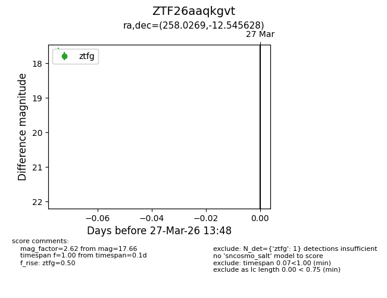
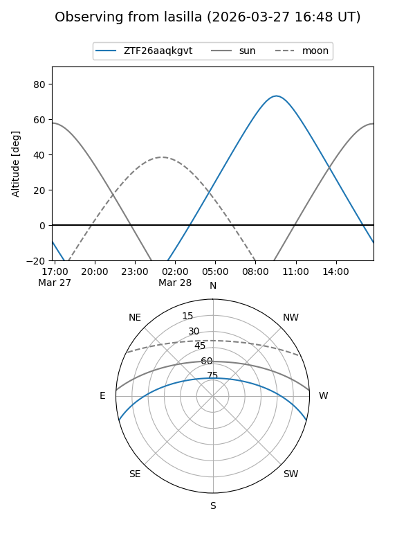
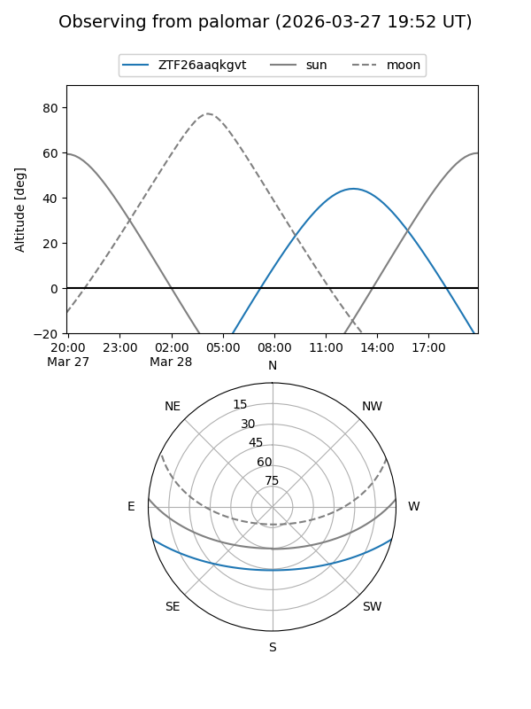

ZTF26aaqkgvt
Target ZTF26aaqkgvt at 2026-03-27 13:50
Aliases and brokers:
FINK: link
Lasair: link
ALeRCE: link
alt names
ZTF26aaqkgvt (ztf,fink_ztf)
Coordinates:
equatorial (ra, dec) = 258.0269,-12.54563
equatorial (HMS+DMS) = 17:12:06.46,-12:32:44.26
galactic (l, b) = (9.7012,+15.41419)
Flags:
Photometry:
last ztfg=17.66
1 ztfg detections
Lightcurve

Visibility


Additional plots